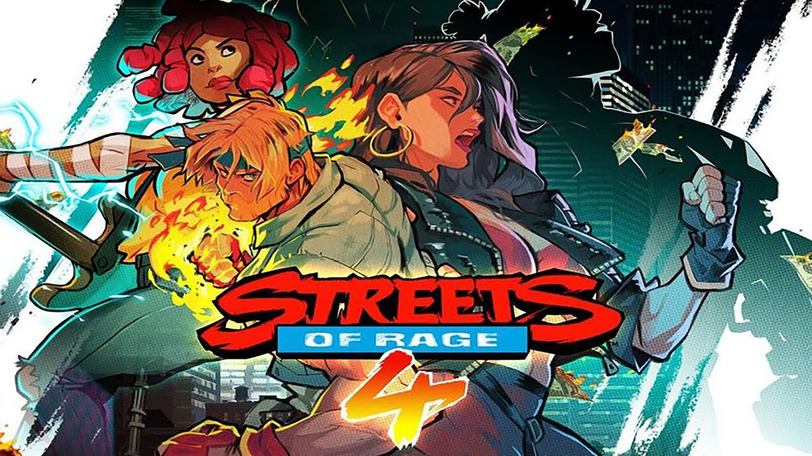

Streets of Rage 4
imagem do jogo Streets of Rage 4
Streets of Rage 4[a] é um jogo de rolagem lateral desenvolvido por Dotemu, Lizardcube e Guard Crush Games e publicado pela Dotemu. O jogo é uma continuação da trilogia Streets of Rage da Sega, originalmente lançada para o Sega Genesis durante a década de 1990. Foi lançado para Microsoft Windows, Nintendo Switch, PlayStation 4, Xbox One, macOS e Linux em 2020, e para o Stadia no ano seguinte. Streets of Rage 4 recebeu críticas geralmente positivas e vendeu mais de 2,5 milhões de cópias até abril de 2021. Uma expansão, Mr. X Nightmare, foi lançada em julho de 2021.
Carregando o estilo de jogabilidade de entradas anteriores na série Streets of Rage do início dos anos 1990, Streets of Rage 4 é uma batida lateral 'em up em que até quatro jogadores localmente ou dois jogadores online lutam contra ondas de inimigos, auxiliados por armas descartáveis e pickups de itens. Ao lado de ataques padrão, lançamentos e Blitz Moves, cada personagem do jogador tem um conjunto de ataques especiais que podem ser realizados ao custo de alguma saúde. Neste jogo, no entanto, os jogadores podem restaurar a saúde gasta em um ataque especial, realizando sucessivos ataques de acompanhamento sem serem atingidos. Cada personagem do jogador também tem um super combo único, "Star Moves", que pode ser realizado coletando Estrelas em cada nível. Um novo sistema de combinação é introduzido, juntamente com a capacidade de malabarismo com adversários contra paredes e outros jogadores, permitindo que os jogadores ganhem pontos extras, juntando combos longos sem serem atingidos. [1] Cada personagem tem características únicas, como o salto de parede de Max e o salto de grappling, a mecânica de parry de armas de Shiva e o combo de rave/ar aéreo aéreo, e a luta de longo alcance de Floyd.
O modo principal de jogabilidade, Story Mode, vê os jogadores passando por cada nível à medida que a história é contada, com uma seleção de palco desbloqueada após a limpeza do Modo História. Os jogadores têm um número limitado de vidas dependendo da configuração de dificuldade, mas podem ganhar mais ganhando um certo número de pontos. Se todos os jogadores perderem toda a vida, terão que tentar novamente o nível desde o início, com a opção de usar assistências que adicionam vidas extras e Star Moves ao custo de uma pontuação reduzida. Ao limpar um nível, os jogadores recebem uma classificação com base em quantos pontos marcaram. Os pontos ganhos vão para uma pontuação vitalícia, que vai para desbloquear personagens de jogadores bônus de jogos passados, apresentados no estilo pseudo de 16 bits. O jogo também conta com o Modo Arcade, que obriga os jogadores a limpar todo o jogo com vidas limitadas, um Modo Rush Boss e um modo de batalha competitivo, que permite que dois jogadores lutem entre si. O jogo também possui uma opção de áudio retrô, com faixas de música das versões Mega Drive/Genesis e Master System/Game Gear dos dois primeiros jogos. [2][3][4]
Enquanto Axel Stone e Blaze Fielding foram jogáveis em todos os jogos de Streets of Rage, Streets of Rage 4 marca o retorno de Adam Hunter como um personagem jogável pela primeira vez desde o jogo original; ele é desbloqueável em uma área em estágio inicial. Também apresenta a filha de Adam, Cherry, um guitarrista que herdou a habilidade de luta de seu pai, e a velocidade de seu tio Eddie "Skate" Hunter. O segundo novo personagem inicial é Floyd Iraia, um discípulo maori do Dr. Gilbert Zan que era um trabalhador da construção antes de perder os braços em um acidente e agora está equipado com braços mecânicos.
Os personagens jogáveis do DLC também são chefes no enredo principal: Estel Aguirre, um recém-chegado sueco-colombiano que trabalha para a polícia; Max Thunder de Streets of Rage 2 e Shiva, um personagem chefe de Streets of Rage 2 e um antagonista recorrente em Streets of Rage 3. Se os caracteres DLC forem selecionados, seus pares de chefes serão versões em holograma de si mesmos.